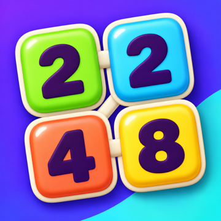

Let your
numbers grow.
A calming number puzzle. A satisfying connection. Made for iPhone and iPad.

Start with two matching tiles. Connect neighboring numbers in eight directions, follow the same number or its double, then lift your finger to watch your path become something bigger.
Your own pace.
Enjoy an evolving 5-by-8 board in Classic mode, with automatic local saving, free hints and no timer.
A fresh daily seed.
One date-based board, 30 moves. Find your best connections and keep a journal of your daily scores.
New colors to grow.
Reach number milestones to unlock four gentle themes. Earn milestone gems for little helpers, including Undo, Prune and Shuffle.
Simply yours.
Completely free. No ads, purchases, registration or tracking SDKs. Play offline, in English or Simplified Chinese.
Version 1.0.0 is being prepared for App Store release. This page does not promise a release date.